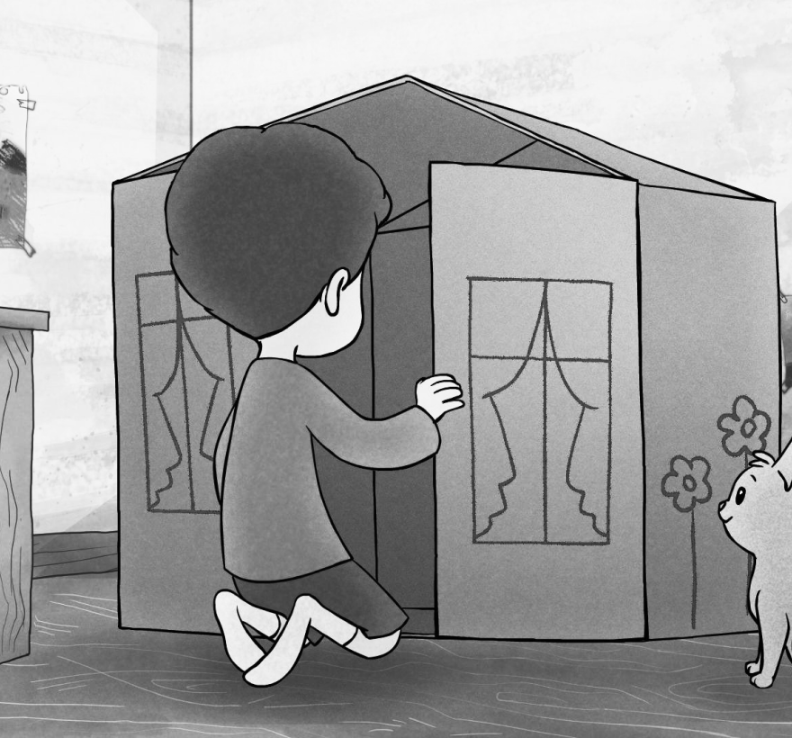

MEDIA
Media #1 THE BOX
Format: Short Film
Author/Filmmaker: Merve Çirişoğlu
Year: 2017
Country: Turkey
Publisher: University of the Arts London
Length / Duration: 06:48 minutes
“It's based on the happy life of a kid which alters instantly with the sudden war and pushes him in a state of struggle. The war changes not only lives, but also the role of the box; first as a carefully built toy house, then as a place to take shelter in a refugee camp with full of dangers and finally as a boat that sails for a journey towards hope.”.